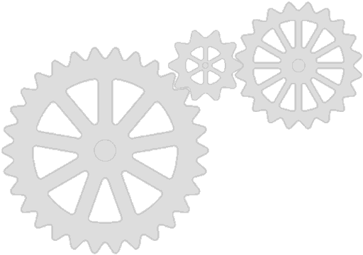

¡Te has preguntado qué es STEAM!?
Es toda una aventura de Ciencia, Tecnología, Ingeniería, Arte y Matemáticas para niños curiosos

¿Qué significa STEAM?
STEAM es una metodología educativa que integra cinco áreas importantes:
- Science (Ciencia)
- Technology (Tecnología)
- Engineering (Ingeniería)
- Art (Arte)
- Mathematics (Matemáticas)
¿Sabías que...? ¡Los astronautas usan matemáticas y ciencia todos los días para explorar el espacio!

¿Para qué sirve STEAM?
STEAM ayuda a los niños a desarrollar habilidades como:
- Resolver problemas de forma creativa
- Pensar como científicos e ingenieros
- Expresarse a través del arte
- Trabajar en equipo
¿Sabías que...? ¡Puedes hacer un robot con materiales reciclados en casa!
¿Cómo se utiliza STEAM?
STEAM se aplica mediante actividades y proyectos divertidos donde los niños pueden experimentar y aprender:
- Construyendo puentes con palitos de paleta
- Creando pinturas con reacciones químicas (como el vinagre con bicarbonato)
- Programando robots con bloques de colores
- Midiendo con reglas y haciendo cuentas para resolver retos
¿Sabías que...? ¡El arte es parte de STEAM porque la creatividad es muy importante para inventar cosas nuevas!

Una rueda del conocimiento STEAM girando por la pantalla 🧠⚙️
¿Quieres probarlo tú?
Aquí tienes un reto STEAM divertido para hacer en casa:
- Materiales: 20 espaguetis crudos, cinta adhesiva, cuerda y un malvavisco
- Reto: ¡Construye la torre más alta que pueda sostener el malvavisco en la punta!
¿Sabías que...? ¡Esta actividad la hacen también los ingenieros adultos en las universidades!
🔬 Experimento STEAM en casa
Volcán de bicarbonato
Materiales:
- Vinagre
- Bicarbonato de sodio
- Colorante rojo
- Botella pequeña
- Charola o plato hondo
Pasos:
- Coloca la botella en la charola.
- Llena la botella con un poco de vinagre y colorante.
- Agrega una cucharada de bicarbonato y observa la erupción.
¿Qué aprendemos? Una reacción química entre un ácido (vinagre) y una base (bicarbonato) genera dióxido de carbono, ¡igual que un volcán!

Volver al Inicio